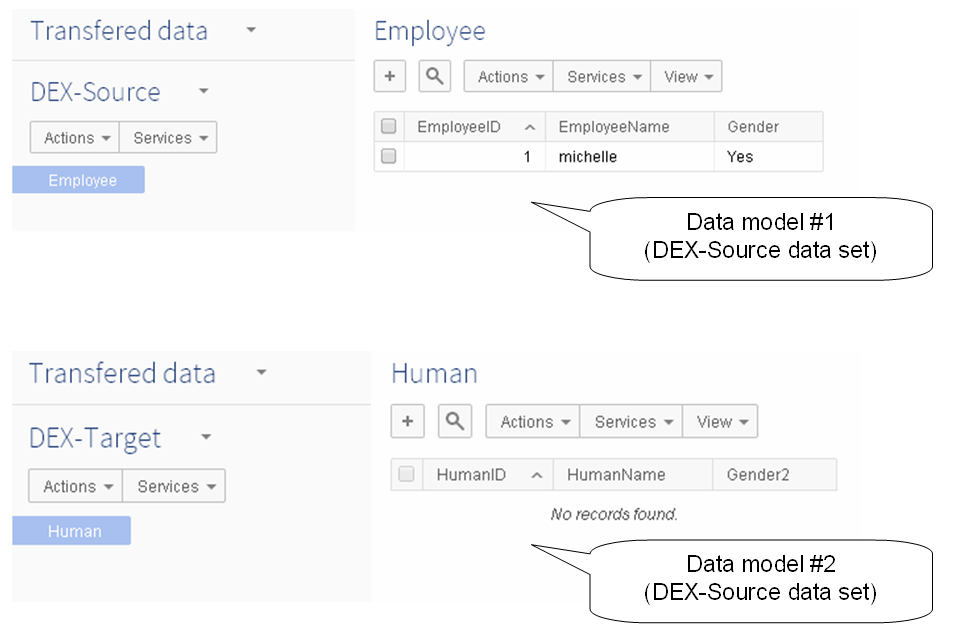
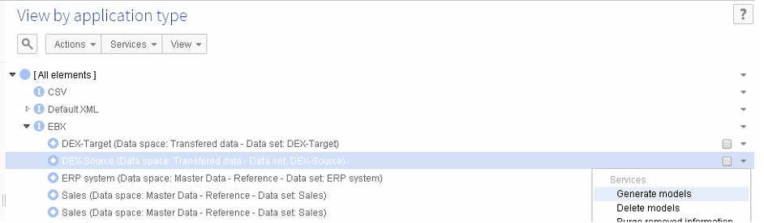
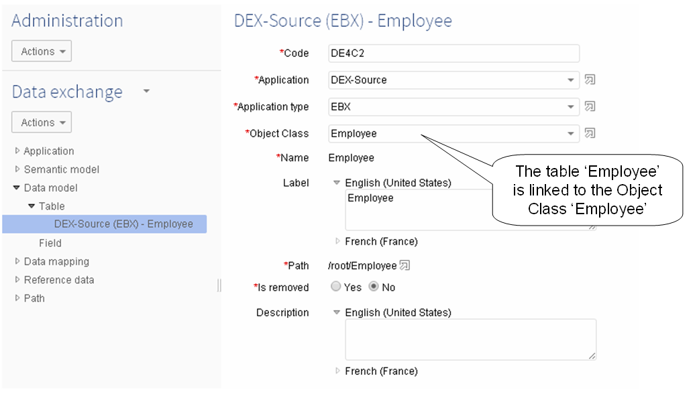
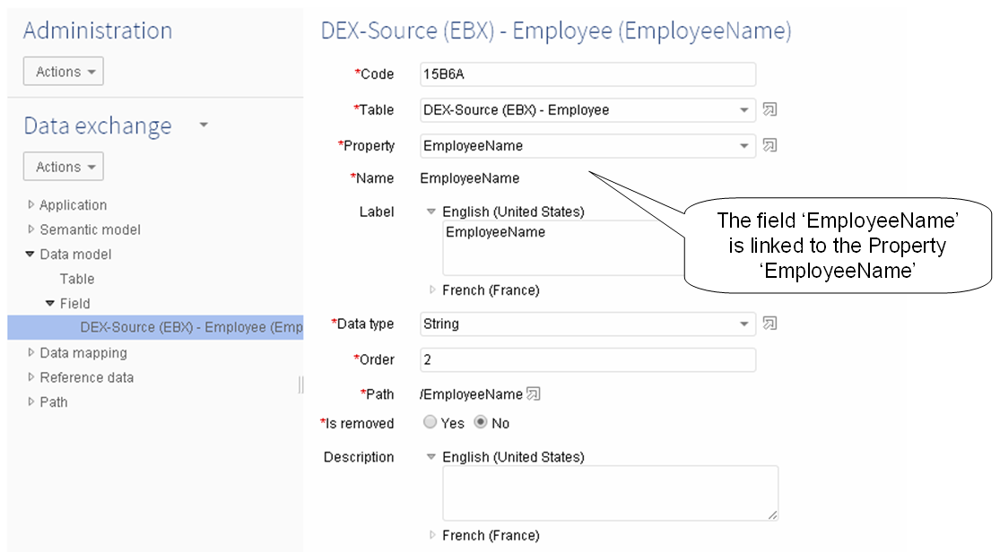
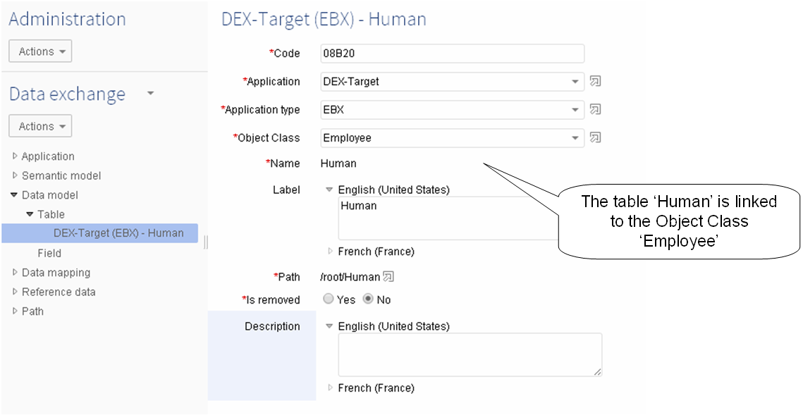
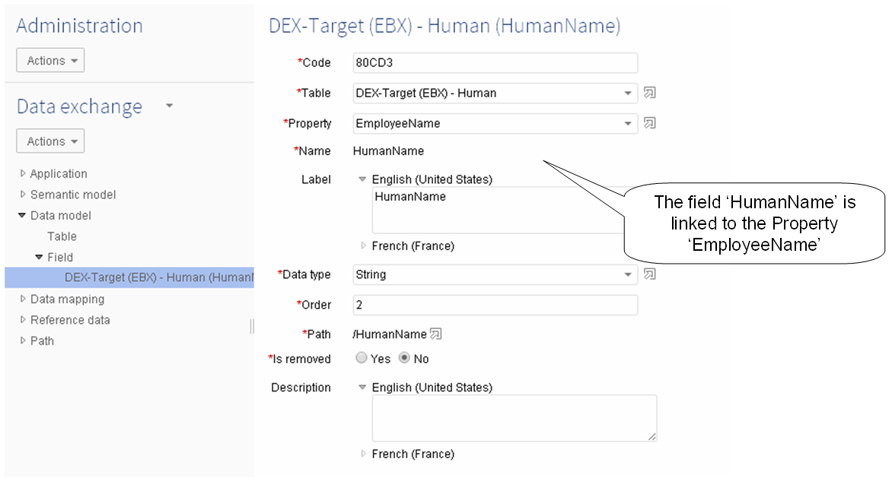
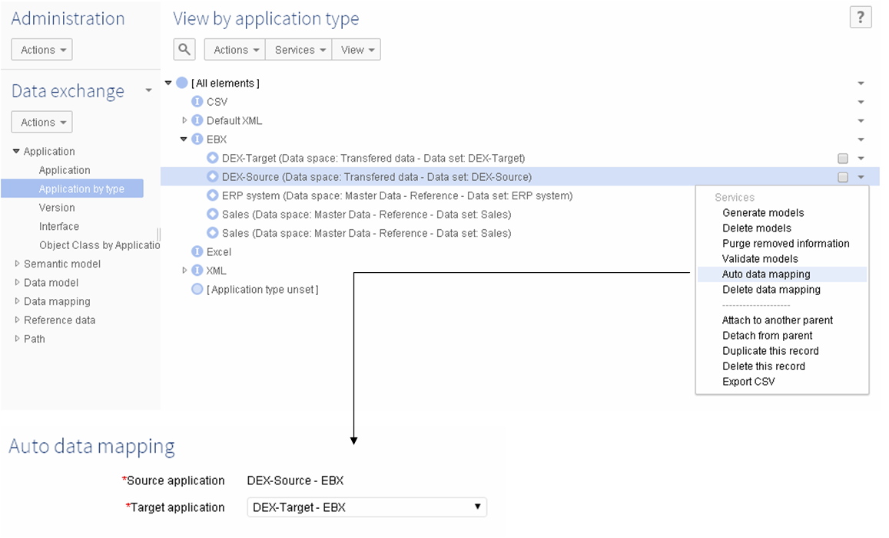
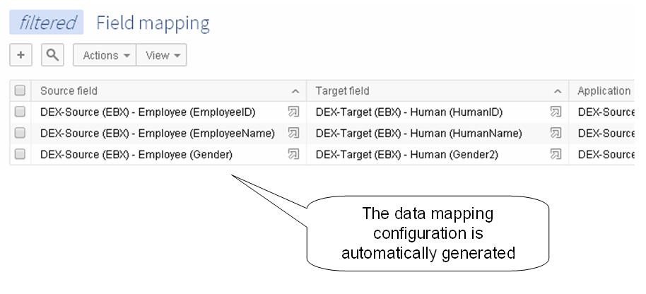
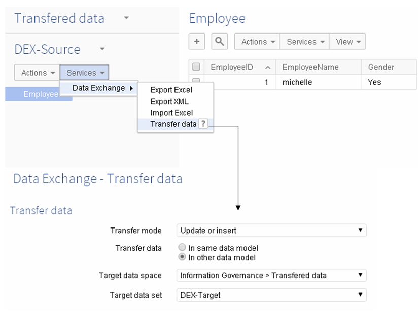
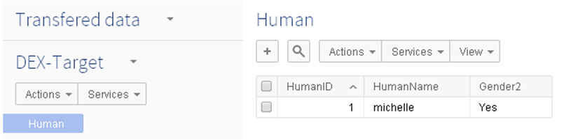

This appendix presents a use case about the automatic data mapping feature. The user wants to transfer data between two tables in two different applications relying on different data models (DEX-Source and DEX-Target).
Since the source and target applications are not based on the same data model, a configuration must be declared in Data exchange.

To facilitate the data mapping configuration, one of this application is used as the pivot (DEX-Source) to generate the semantic and data model.
The generated Tables and Fields are linked to Object Class and Properties respectively of the source application.
Execution of the service 'Generate models' on the application 'DEX Source'.

The Table 'Employee' is then linked to the Object Class 'Employee'.

Each field of the table 'Employee' is linked to its related Property. Below the example of the field 'EmployeeName'.

The table and fields of the target application are manually linked to the same Object Class and Properties of the source application.


Once the target application has been configured to share the same Object Class and Properties of the source application, the automatic generation of the data mapping is executed and the data transfer becomes available.

The result of the 'Auto data mapping' is illustrated below. It is used to make possible the data transfer from the source application 'DEX-Source' to the target 'DEX-Target'.

On the data set of the source application, the 'Transfer data' service allows you to transfer the data from the DEX-Source to the DEX-Target directly.

Then the target table 'Human' is fed with the source table 'Employee'.
